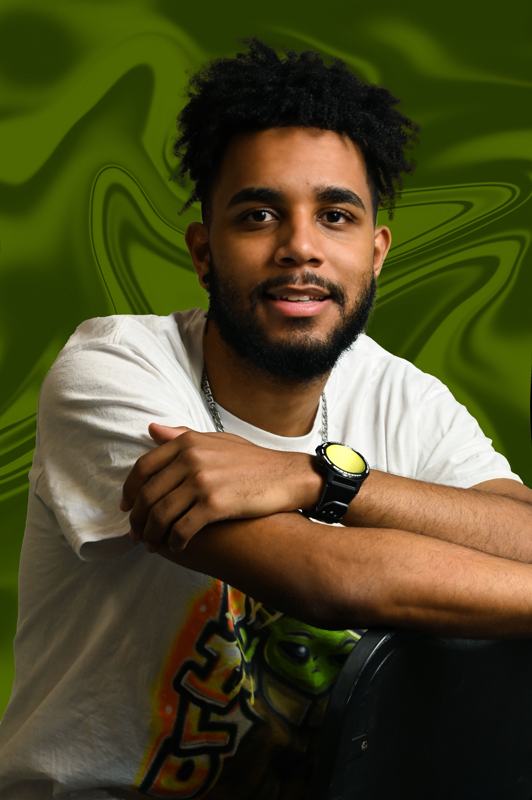

I'm Sebastian Cueto, a Graphic and Visual Designer
Design without strategy is just expensive decoration. Pretty moodboards are easy to throw together, but what actually keeps me up at night is whether a real human can navigate your product without getting frustrated and clicking away.
Based in Florida with over four years in visual design and product strategy, I partner with ambitious brands to turn confusing digital touchpoints into clear, reliable conversion paths. Sometimes that means rebuilding an entire checkout flow from the wireframes up. Other times it is designing high-converting email campaigns or building an unmistakable brand identity that earns trust on day one. If it touches a screen, I care about making it fast, intuitive, and profitable.
What I Do
UI/UX Design
Wireframes, prototypes, and user flows built around human habits rather than designer ego. I cut out extra clicks, clarify confusing states, and make complex web apps feel lightweight.
Web Design
Responsive layouts engineered for clarity and speed. I balance generous whitespace with crisp typography so first-time visitors immediately understand what you do, why it matters, and where to buy.
Email Design
Modular layouts that do not fall apart in Outlook or dark-mode Gmail. I structure promotional sends and automated retention flows that get opened, read, and clicked, week after week.
Brand Identity
Logos, color palettes, typographic guidelines, and packaging rules that give early-stage ventures and established shops an unmistakable presence. Built to stay cohesive as your team grows.
Ad Design
Paid social and display creative built specifically for the feed. By testing visual hooks and direct benefit messaging, I help marketing teams lower cost per acquisition without cheapening their brand.
Conversion Strategy
I look at heatmaps, drop-off points, and customer objections before opening a Figma file. Every layout choice gets backed by data and user psychology, ensuring you get measurable return on design work.